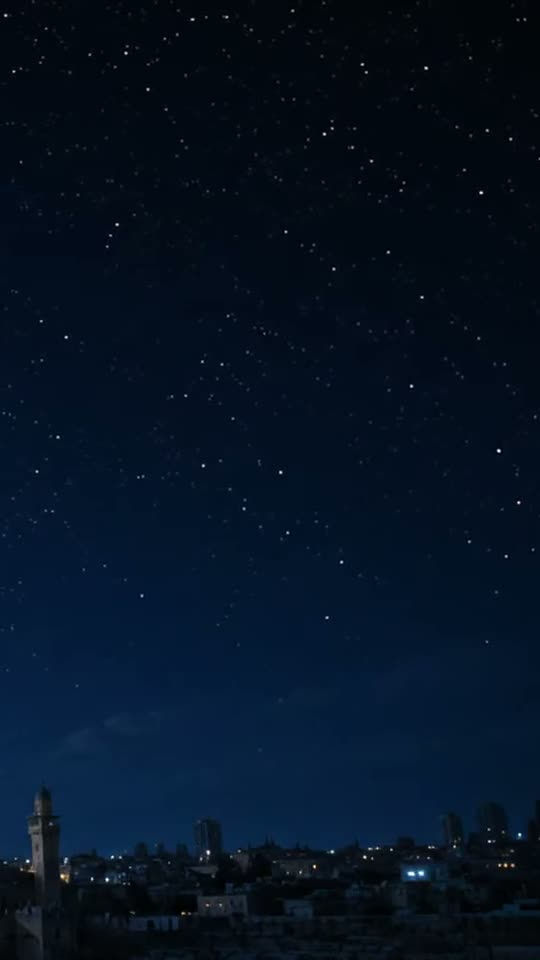
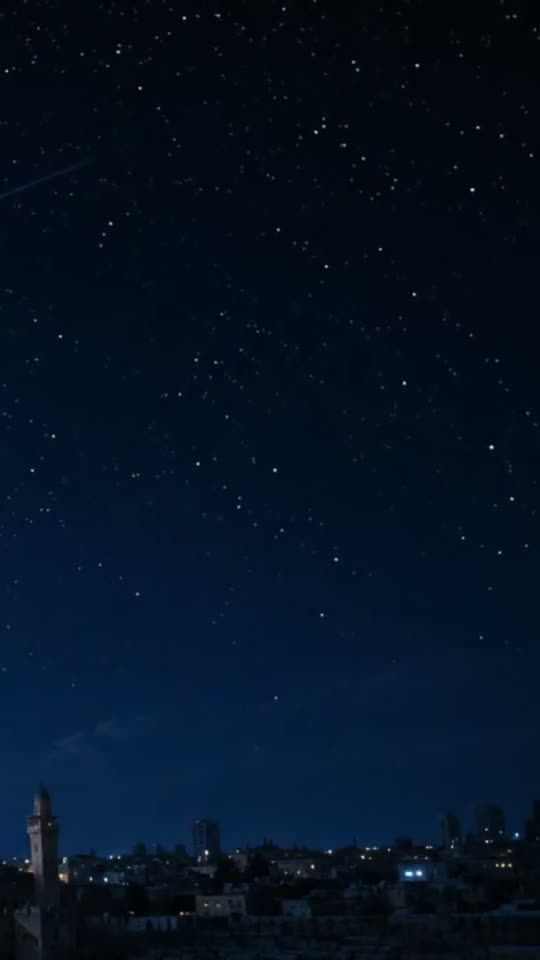

كل الريلز
شاهدها بملء الشاشة
0:08
الحكايةلماذا تعثّرت «خطة الجنرالات» قبل أن تبدأ؟اليوم · 09:40 م
0:07
حديث اليومالمعابر: ما الذي يدخل فعلًا، وما الذي يُمنع؟اليوم · 07:00 م

0:08 عاجللحظة إطلاق النار على شاب أعزل في قلنديااليوم · 09:56 م 0:06 أخبار شلوموالإعلام العبري بعد الكمين: لغة جديدة للهزيمةأمس · 09:40 م 0:10 سين صريحسؤال واحد للمتحدث: أين ذهبت المساعدات؟أمس · 08:30 م
0:07 ميدانالأسير المحرر عبد السلام أبو الهيجا أمام قبر والدتهاليوم · 08:51 م 0:09 قصة صورةحكاية اللقطة: الطفل الذي حمل العلم في رفحأمس · 06:15 م 0:05 ميدانمن اقتحام محيط الجامعة الأمريكية بجنيناليوم · 08:12 م